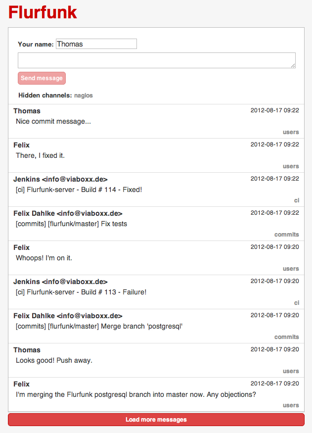
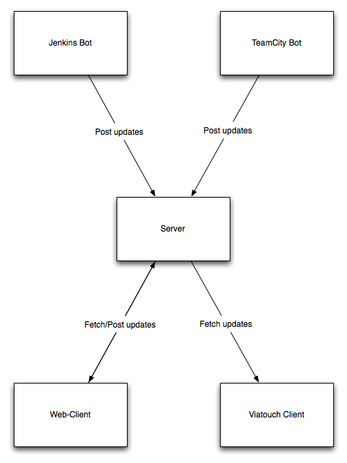

:
Want to start setting up your own flurfunk instance? Head over to the wiki for instructions.
Flurfunk is an easy way to communicate with your colleagues. It offers a simple timeline where you can post messages and links. It also offers a REST-API that can be used to post build- and commit messages and alike.
The name Flurfunk is a German expression for "the talk of the office".
Flurfunk was developed for internal use by Viaboxx Systems, and then open sourced on the 5th of April, 2012.
The idea behind Flurfunk is to build a simple message store behind a REST interface, and allow various clients to push and read messages:
:
See the wiki for more information.